Snapchat is an app that is available on the app store and the google play store. It is a simple app. Once you download it and make an account it is amazing what you can do! You can send and receive videos and photos from your ‘friends’ once you have added them. You can also post to your ‘story’ which is something that all your friends can see. It is kind of like posting a status on Facebook or tweeting on Twitter. You can also make a
‘Private’ story which is one where you are in control of who you add to see the story.
There are also public stories on snapchat and shows From make by differnt companies to keep you entertained.
MTV to Beauty Insider, you can watch different mini shows or read
articles. There are also a group chat function in which you can have all your friends in one spot to text or send snaps.
You can download snapchat on nearly all phones and it is actually very easy to create an account on the app! Below are the steps to do so:
1. In order to register for Snapchat, you need to download the app from the app/play store.
2. Once downloaded you it gives you the option to sign in or sign up, as you need to create an
account to use the app.
3. When you click sign up, it then asks you for your name.
4. It then asks for your birthday. The app is for anyone aged 13+ so they ask for your age in order
to see if you’re over 13.
5. Once you’ve put in your age it then asks you to select your username it generates some for you
or you can pick your own.
6. Next is the password selection. It has to be more than eight characters long.
7. You then need to add your email and then it asks for your mobile number, this isn’t a required
step, but it is better to add your phone number.
8. It then asks if you want to find friends by syncing your contacts, you can skip this step and do it
later if you want.
9. Then that’s it, you are signed up for Snapchat!
These are the the step by step screen shots of how to create a profile on Snapchat.
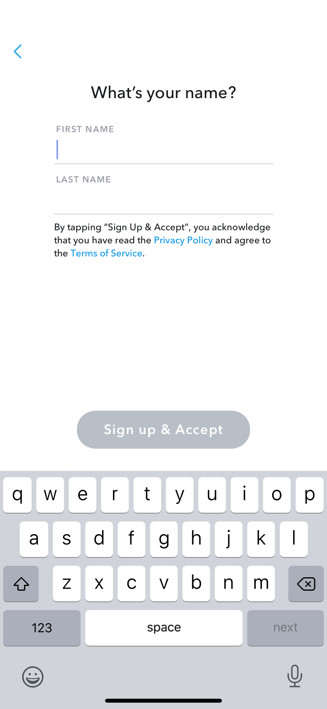
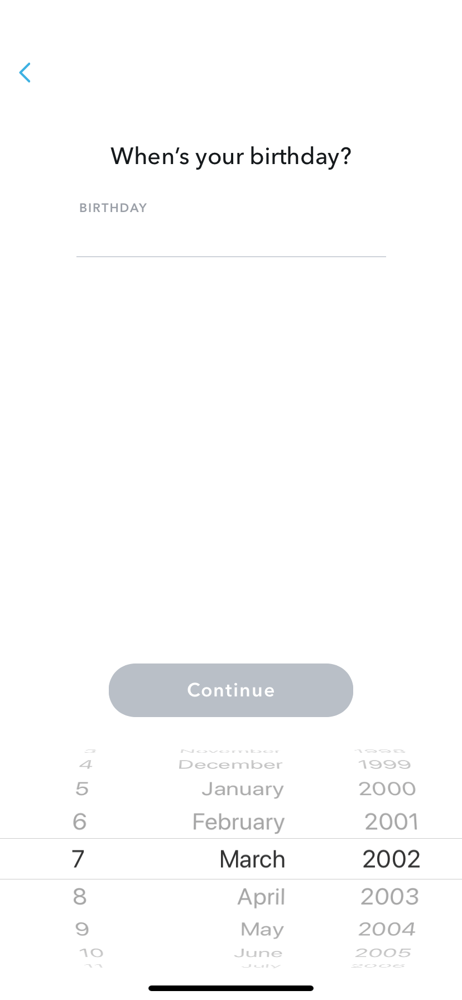
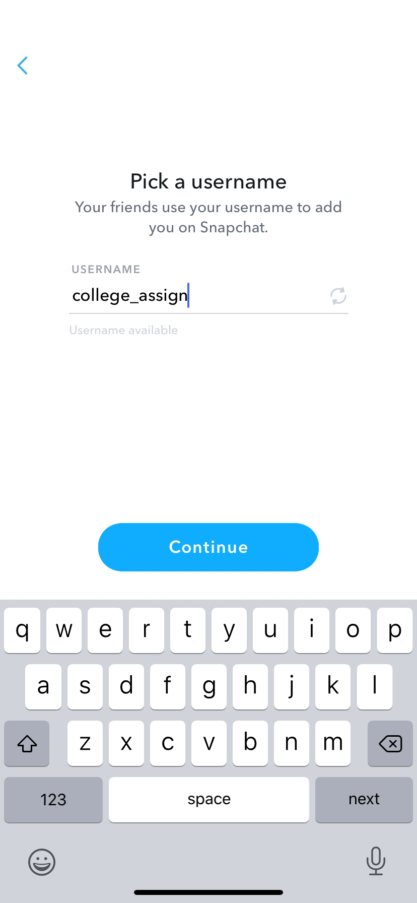
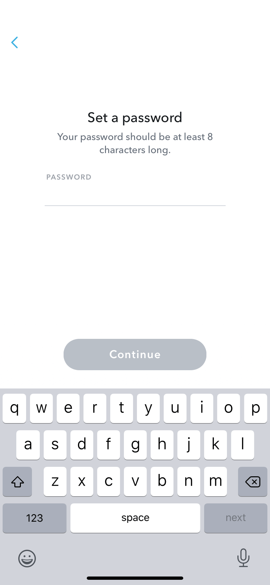
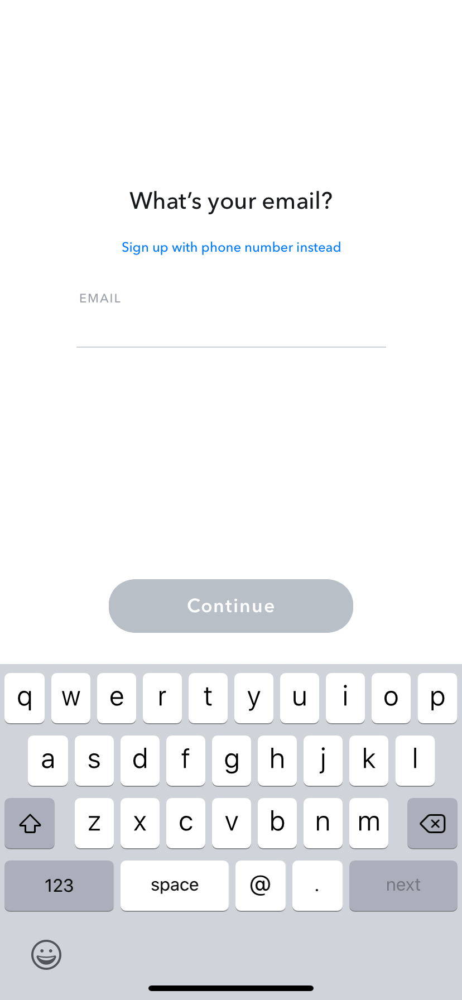
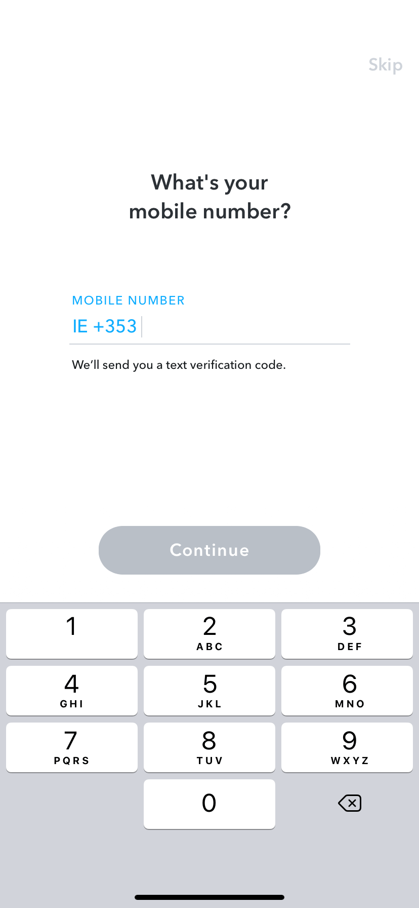
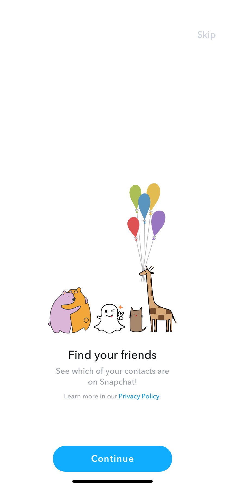
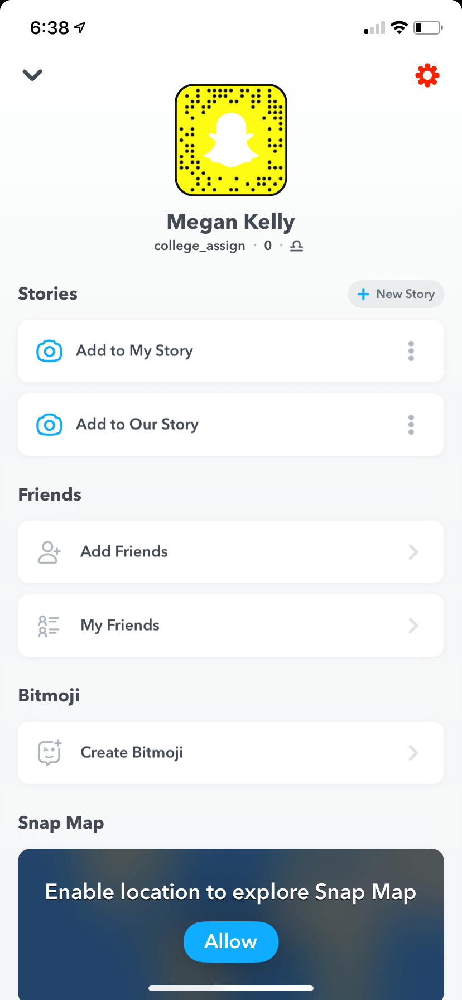
Now that your up and running, this is how you can use the app!
The most common use of Snapchat is to communicate with friends via image based messages but you can
also communicate by just sending direct messages. Many people also use Snapchat to follow celebrities, as they are always posting pictures and stories about your lives.
So the main use of Snapchat like the name suggests is sending messages as images. How this is done is
when you open up the app you automatically are at the home/camera screen. From here you can take a photo by tapping the large circle, which will change the screen, where your given the option to add text, draw, add stickers and make the image last for however long you want it to last for.
To add text just tap on the T button and you will be able to start typing. To add a drawing just select the pen tool. To add stickers just select the sticky note and it will give you a bunch of different options.
If you swipe to the left you are brought to the chat screen where you can choose individual friends or group chats to talk to.
Now if you go to the right of the home screen you’ll be brought to the discover screen where you can view your friend’s stories. These appear along with all the Subscription stories, at the top of your screen. Below the stories section, we have the stories of people who you have subscribed too and below that are stories from companies and other creators that you may like to watch.
To view a story all you have to do is tap it and it will begin to play.
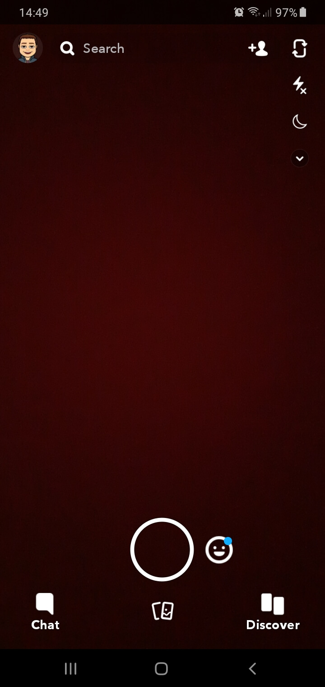
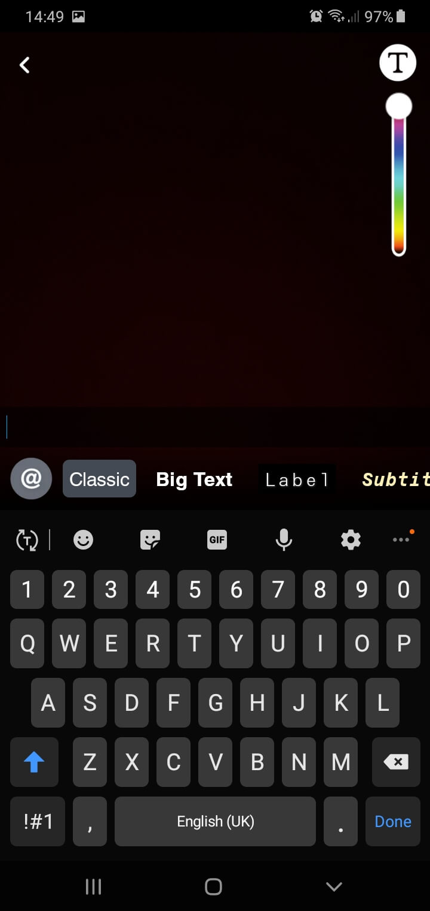
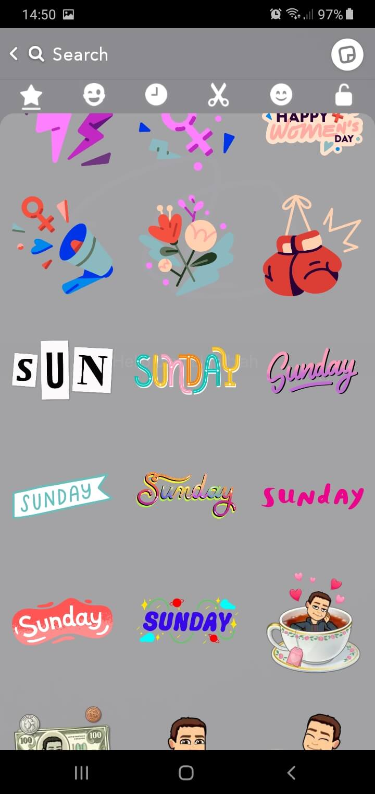
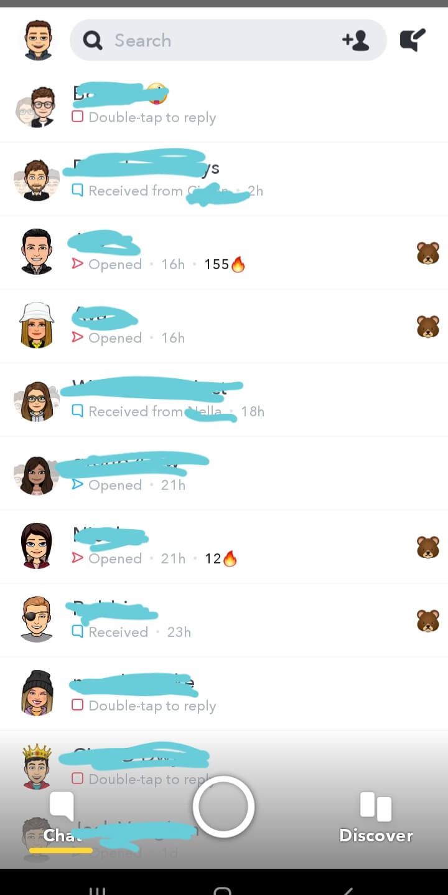
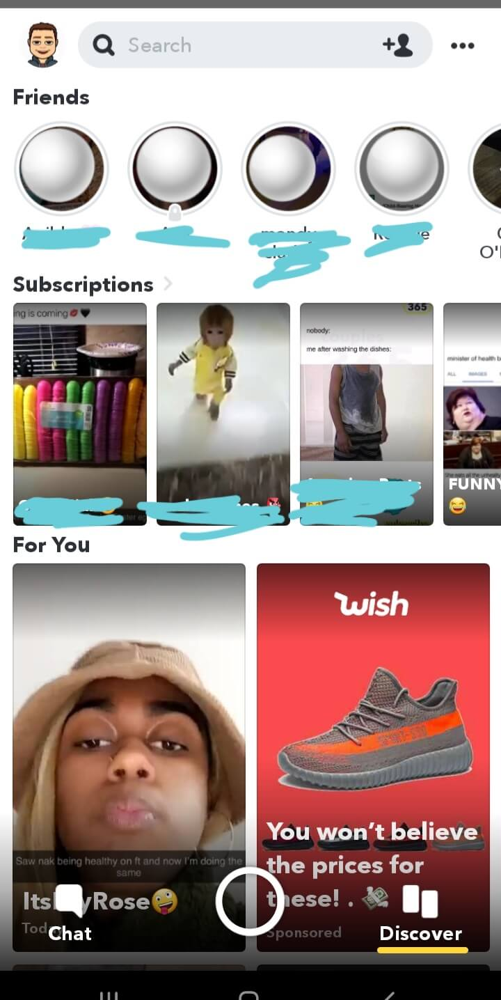
Incase your still lost, heres a quick video to help you learn the basics.